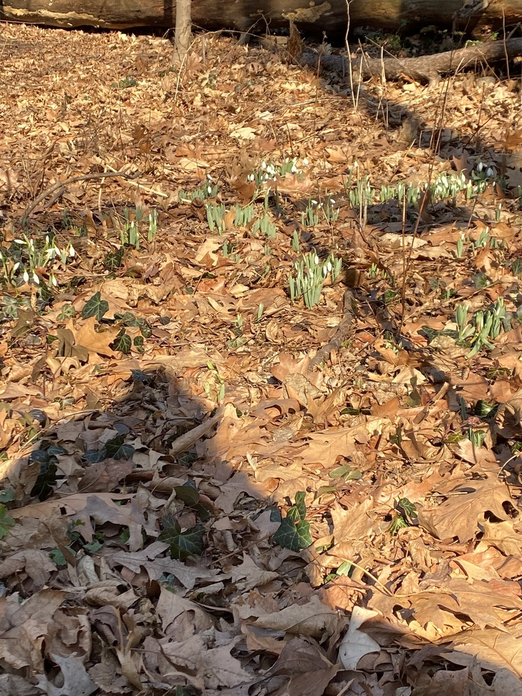
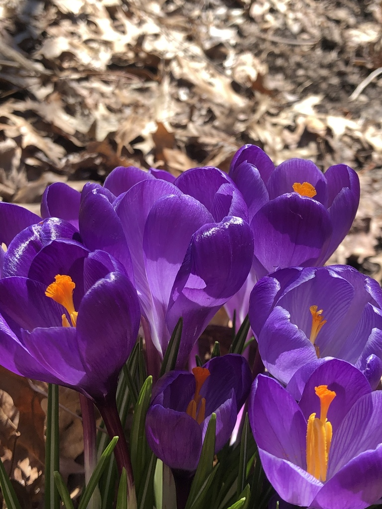

Snowdrop (Galanthus elwesii)
This year, according to the Parks department, snowdrops were spotted in Central Park in January. Snowdrops are one of the earliest signs of spring approaching. Fun fact: galanthus elwesii hail originally from Eastern Europe

Spring Crocus (crocus vernus)
Crocuses are one of the most identifiable first signs of spring. This year, according to the Parks Department, crocuses were seen in January in NYC parks. This photo is from iNaturalist user chelseafinds.
